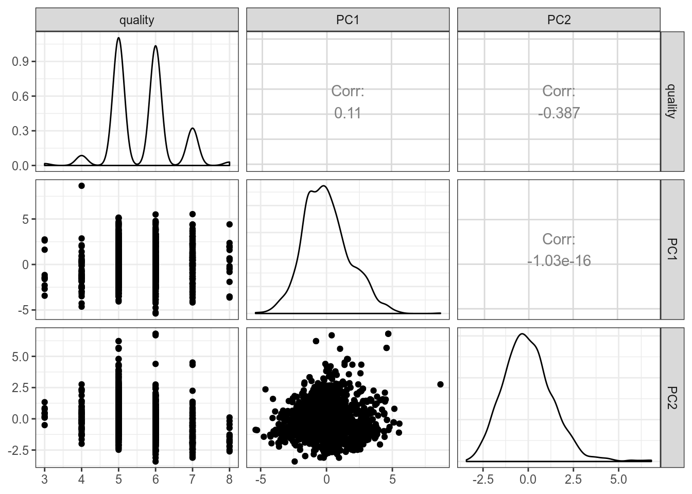

Давайте рассмотрим датасет продаж видеоигр в миллионах долларов (взято отсюда) со следующими переменными:
NamePlatformYearGenrePublisherNA_SalesEU_SalesJP_SalesOther_SalesИспользуйте переменные по продажам для того, чтобы построить PCA (не забудьте нормализовать). Так как названия повторяются, в качестве имен строчек я использовал комбинацию переменных Name и Platform. Отфильтруйте те игры, которые заработали больше миллиона долларов, а потом постройте следующий график:
Что это за аутлайер наверху в жанре Action?
Что это за аутлайер наверху в жанре Sports?
Что это за аутлайер внизу в Role-Playing?
Укажите кумулятивную долю дисперсии, объясненная PC1 и PC2 с точностью до трех знаков после запятой:
Давайте рассмотрим датасет посвещенный (взято отсюда) со следующими переменными:
Output variable (based on sensory data):
Проведите PCA анализ, исключив переменную quality, и постройте следующий график:
df <- read_csv("https://raw.githubusercontent.com/agricolamz/2020_ds4l/master/data/winequality-red.csv")
PCA <- prcomp(df[,-12], scale. = TRUE)
library(ggfortify)
autoplot(PCA,
loadings = TRUE,
loadings.label = TRUE)Что можно сказать про переменные alcohol и total sulfur dioxide?
Что можно сказать про переменные alcohol и fixed acidity?
Позволяют ли полученные первые две компоненты предсказывать переменную quality?

Укажите кумулятивную долю дисперсии, объясненная PC1 и PC2 с точностью до четырех знаков после запятой:
Как вы считаете, стоит ли полагаться на полученное преобразование? Почему?
Давайте рассмотрим датасет с грибами (взято отсюда) со следующими переменными:
Используйте все переменные кроме classes для анализа MCA и постройте следующий график:
Что можно сказать про получившиеся кластеры?